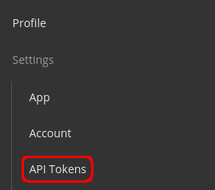
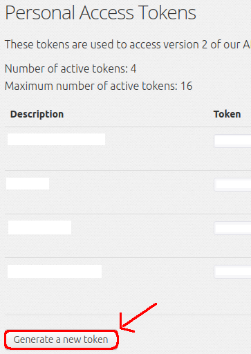

A WaniKani API Key is a token that is meant to give you access to all the content provided by WaniKani through a third party application (like this one).
You can create your API Key on WaniKani official website through the following steps:
1- Click on your photo on the navigation bar anywhere on the website, and then click API Tokens.
2- Click on Generate a new token, give it any name you want, and then copy it and paste it here in the extension.
